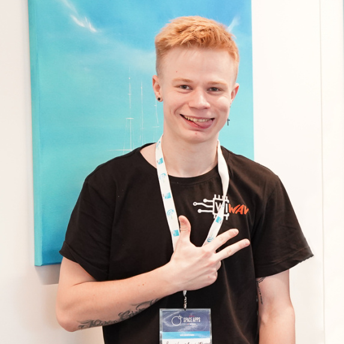

I build things that live between silicon and screen — from STM32 firmware and FreeRTOS tasks to full-stack web apps. President of the WIWAV scientific circle in Szczecin, Poland, shipping projects that reach from assistive tech to low Earth orbit.

I'm a developer working across the whole stack of a physical product — schematic to sensor to server. My roots are in embedded systems: microcontroller firmware in C, real-time tasks on FreeRTOS, motor drivers, touchscreens and sensors on STM32 boards. On top of that I write the software that gives the hardware a voice — web front-ends, tooling and data pipelines.
My path started with a national intellectual-competition win, ran through a professional software-development education at STEP IT Academy, and continues today at the West Pomeranian University of Technology (ZUT) in Szczecin, where I lead the WIWAV scientific circle as its president.
I like problems where a deadline, a soldering iron and a blank editor all show up at once — hackathons, assistive-tech prototypes, and small satellites. I care about work that's useful in the real world, not just on a slide.
2.5-year professional curriculum · from AI foundations to full-stack, cloud & fintech.
A prototype nanosatellite with a wooden structure, inspired by the WoodSat mission — cheaper and roughly 5× lighter than an aluminium build, designed to survive 1.5+ years in orbit. Built for the "Commercializing Low Earth Orbit" challenge to make space access affordable for small orgs and universities.
With team "Dreamteam" — a prototype wearable meant to replace the traditional white cane, mapping the surrounding space so it can be recognised faster and more safely. An award-recognised entry in a disability-focused hackathon.
Team "Łazior-baza" — a remotely controlled mobile wheeled platform. A full mechatronics build: chassis, drive electronics, control link and the software to steer it, developed as a group engineering project at ZUT.
A body of embedded work on Nucleo/Discovery boards: stepper control with ULN2003, FreeRTOS multi-task apps, touchscreen UIs with mutex-guarded LCDs, and TIM-based timebases — all building clean from Makefile and CubeIDE.
Leading the WIWAV scientific circle at the West Pomeranian University of Technology, building projects and competing in hackathons across embedded, robotics and space tech.
Represented the Faculty of Computer Science with a wooden CubeSat concept for commercialising low Earth orbit.
Second-year student on team "Dreamteam", prototyping a device to help visually impaired people navigate.
Professional computer education that laid a strong practical and theoretical foundation for both software and hardware work.
Winner of the Green Center Metinvest intellectual competition for students — physics, chemistry, math, ecology and quick thinking, run in partnership with STEP academy.
Embedded software engineering at a Szczecin firm delivering firmware, RTOS and device-driver solutions for rail, marine, automotive and industrial-automation clients across Europe.
Design and build electronic props and puzzle hardware for escape rooms — microcontroller-driven devices, control logic and the software that ties a room together, shipped to operators worldwide.
Lead the student scientific circle: set the project roadmap, form and mentor hackathon teams, and represent the Faculty of Computer Science at events like the NASA Space Apps Challenge.
Multidisciplinary engineering across assistive tech, mobile robotics and space hardware — taking prototypes from concept to award-winning demo under hackathon deadlines.
Full 2.5-year professional software-development program — a strong practical and theoretical foundation across languages, web, cloud and AI.
More certificates & diplomas are listed on LinkedIn — connect to see the full record.
Open to embedded, full-stack and R&D collaborations, internships and hackathon teams. Drop a line and let's talk.